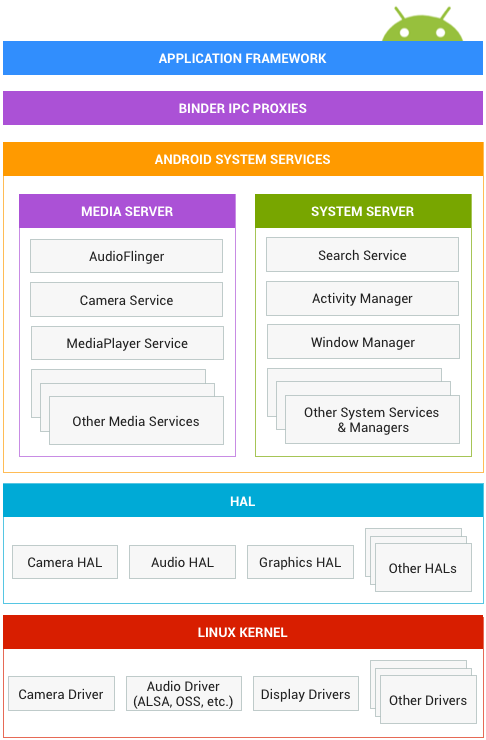

| 歴史 | 説明 |
|---|---|
| 2003年 | アンディ・ルービン、リッチ ・マイナー、ニック・シアーズ、クリス・ホワイトが携帯電話向けソフトウェアプラットフォームを開発しAndroid社を設立。 |
| 2005年 | GoogleがAndroid社を買収し、一時はGoogleが「 gPhone」という独自の携帯電話端末の開発を進めているという憶測が流れた |
Androidはオープンソースです。
Androidアーキテクチャは、下記のような構成となっています。

Androidのアーキテクチャは、Linux2.6カーネルをベースにしています。
Androidランタイム（ART）は、スレッドやメモリ管理などの基本となる機能がLinuxカーネルに依存しています。
Linuxカーネルを使用すると、主要なセキュリティ機能とデバイスメーカーといったカーネル用のハードウェアドライバを開発することができます。
ハードウェアアブストラクションレイヤ（HAL）は、より高いデバイスハードウェア機能を提供する標準インタフェースのJava API フレームワークです。
JavaソースをDEXバイトコードへコンパイルする役割を持つ。
Androidのために特別に設計されたバイトコード形式を実行することにより、メモリが少ないデバイスでの複数の仮想マシンを実行できるように書かれています。
Android 5以降はDalvikはARTに置き換えられました。
ARTの主な機能は以下のものが挙げられます。
実行時（JIT）コンパイル
最適化されたガベージコレクション（GC）
専用のサンプリングプロファイラ、詳細な診断例外とクラッシュ報告、および特定のフィールドを監視するようにウォッチポイントを設定する機能などより優れたデバッグサポート。
これらの機能により実行速度や開発効率の改善を実現しています。
ただしAOTコンパイルについては、アプリのインストールやアップデートを一度に大量に行う場合、コンパイル時間が長くなってしまうことが問題視され、Android Nでは初回起動時にコンパイルするようになる予定です。